베어스트레이드
베어스, 올프로 DT 제프리 시먼스 영입… 1라운드 지명권 2장 내줘베어스가 타이탄스에 2027·2028년 1라운드와 2027년 4라운드 지명권을 주고 시먼스(+2028년 5라운드)를 데려왔어요. ESPN 리서치에 따르면 1967년 이후 1라운드 지명권 여러 장에 트레이드된 첫 DT예요. 타이탄스 마이크 보곤지 단장은 "거절하기엔 너무 좋은 조건"이었다고 말했어요.
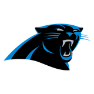
CAR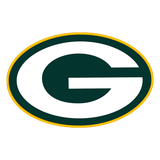
GB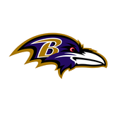
BAL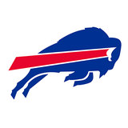
BUF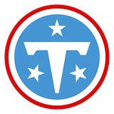
TEN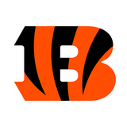
CIN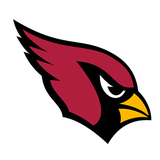
ARI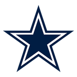
DAL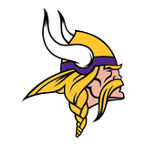
MIN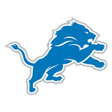
DET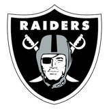
LV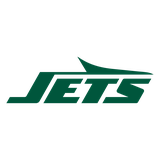
NYJ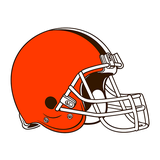
CLE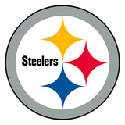
PIT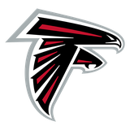
ATL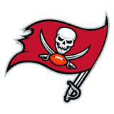
TB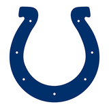
IND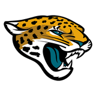
JAX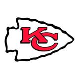
KC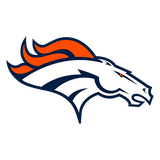
DEN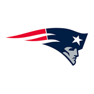
NE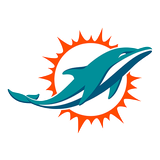
MIA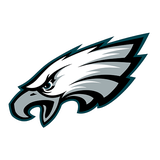
PHI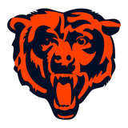
CHI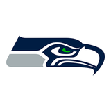
SEA베어스가 타이탄스에 2027·2028년 1라운드와 2027년 4라운드 지명권을 주고 시먼스(+2028년 5라운드)를 데려왔어요. ESPN 리서치에 따르면 1967년 이후 1라운드 지명권 여러 장에 트레이드된 첫 DT예요. 타이탄스 마이크 보곤지 단장은 "거절하기엔 너무 좋은 조건"이었다고 말했어요.
베어스가 타이탄스에 2027·2028년 1라운드와 2027년 4라운드 지명권을 주고 시먼스(+2028년 5라운드)를 데려왔어요. ESPN 리서치에 따르면 1967년 이후 1라운드 지명권 여러 장에 트레이드된 첫 DT예요. 타이탄스 마이크 보곤지 단장은 "거절하기엔 너무 좋은 조건"이었다고 말했어요.
같은 소파이 스타디움을 쓰는 두 팀이 4시즌 만에 맞붙어요. 같은 도시를 쓰지만 라이벌 구도는 아니라는 분석이에요. 경기는 11/02 (월) 06:05 KST.
프로볼 8회 가드 넬슨이 콜츠에서 8시즌 넘게 뛴 뒤 디펜딩 챔피언 시호크스로 옮긴 소감을 밝혔어요. 시호크스는 2027년 3라운드, 2028년 5라운드 지명권을 내줬어요. 넬슨은 행선지 결정에 자신의 의견은 없었다고 했어요.
IR에서 돌아온 뒤 처음으로 훈련에 빠졌어요. 기존 오른쪽 발목 부상에 무릎 문제까지 겹쳐 일요일 돌핀스전 출전이 불투명해요. 현재 53인 로스터에서 건강한 WR은 3명뿐이에요.
저스틴 터커를 연습팀에 데려왔지만 데이브 터브 코디네이터는 버커가 주전 키커라고 못 박았어요. 버커는 올 시즌 필드골 16번 중 5번을 놓쳤어요. 치프스는 일요일 브롱코스와 AFC 서부 선두를 다퉈요.
브라운리는 필수 미팅에 여러 번 빠져 지난 일요일 명단에서 제외되고 벌금을 받았다고 직접 밝혔어요. "책임감의 문제"라며 이번 주 경기에는 뛸 수 있다고 했어요.
올프로 5회 키커 터커가 성추행 의혹 이후 10경기 출장정지를 마치고 치프스 연습팀에 합류했어요. 앤디 리드 감독은 "징계를 다 마쳤고, 우리도 최대한 검증했다"고만 말했어요. 터커는 의혹을 계속 부인하고 있어요.
숀 맥베이 감독이 개릿(무릎)과 퍼거슨(발목)은 이번 주 훈련에 돌아오지 않는다고 밝혔어요. 램스는 11/02 (월) 06:05 KST 차저스와 홈 경기를 앞두고 있어요.
루키 계약 마지막 해인 다운스에게 여러 팀이 관심을 보였지만 진전이 없자 트레이드를 요청했어요. 셰인 스타이첸 감독은 RB 테일러에 대해 "우리 팀 선수"라고 선을 그었어요. 콜츠는 하루 전 넬슨·버크너를 내보냈어요.
왼쪽 발목 염좌로 3경기를 쉰 잭슨이 24일 만에 훈련에 완전 참가했어요. 일요일 빌스 원정 복귀 가능성이 커졌어요.
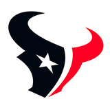
텍산스부상팀 내 리시빙 야드 1위(331야드)였던 2년 차 노엘이 킥 리턴 중 발가락을 다쳤어요. 마빈 해리슨 주니어와 탱크 델이 공백을 메울 전망이고, 텍산스는 이번 주 휴식(BYE)이에요.
필립스(햄스트링), G 데미언 루이스(무릎) 등 4명이 램보 필드 원정에서 빠져요. 패커스도 C 숀 라이언, LB 자이르 프랭클린이 결장하고 WR 매슈 골든은 출전 불투명이에요. 10/30 (금) 09:15 KST 킥오프.
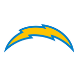
차저스코칭휴식 주간 자체 점검을 마친 짐 하보 감독이 "맥대니얼의 능력을 매우 신뢰한다"며 유임을 발표했어요. 차저스는 아직 시즌 첫 승이 없는 유일한 팀이에요.
침 뱉기 혐의로 받은 1경기 출장정지가 항소 끝에 벌금 14,926달러로 줄었어요. 일요일 레이븐스전에 뛸 수 있어요.
타깃 점유율과 팀 성적에 대한 답답함을 드러냈지만 이적 요청은 하지 않았어요.
카딕스 클리츠 착용으로 11,941달러 벌금을 받았고 항소한 상태예요. 윌리엄스는 앞으로도 같은 신발을 신겠다고 밝혔어요.
8년 연속 프로볼, 올프로 3회의 가드를 2027년 3라운드·2028년 5라운드 지명권에 데려왔어요. 패커스·베어스·이글스도 관심을 보였고, 시혹스는 자리를 만들려고 G 크리스천 헤인스를 방출했어요.
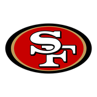
49ers트레이드콜츠가 같은 날 두 번째 대형 트레이드로 버크너를 2027년 4라운드 지명권에 보냈어요. 부상이 많은 수비 라인을 보강하는 친정 복귀예요.
닥 프레스콧이 이끄는 공격이 필라델피아 원정에서 살아났어요. NFC 동부 판도가 다시 흔들리고 있어요.
금지약물 규정 위반으로 2경기를 쉬었던 스웨트가 "고의가 아니었다"며 책임을 인정했어요. 이번 주 먼데이나이트 시혹스전부터 뛸 수 있어요.
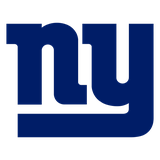
자이언츠부상최소 4경기를 쉬어야 해요. 캠 스캐터보와 데빈 싱글터리가 러싱을 나눠 맡고, 차저스 연습생 RB 그레그 데로지어스를 영입했어요.
소식통을 인용한 NFL 네트워크 이언 래퍼포트 보도예요.
주말 경기에서 무릎 내측인대를 다쳤어요. 레이븐스는 이번 주 빌스전을 앞두고 있어요.
2연패에 몰렸던 시혹스가 '플레이오프 모드'로 나서 치프스를 3점으로 묶었어요. 잭슨 스미스-엔지그바가 리시빙 150야드에 터치다운 1개를 기록했어요.
제시 민터 감독이 월요일 기자회견에서 잭슨이 일요일 빌스전에 나설 수 있을 거라고 기대했어요. 레이븐스는 올 시즌 전반엔 리그 최고, 후반엔 리그 최악의 득실차를 기록 중이에요.
비골 골절에 이어 발목 수술까지 받게 되면서 남은 시즌을 뛸 수 없게 됐어요.
치프스전 승리의 대가로 주전 레프트 태클을 한동안 잃게 됐어요. NFL 네트워크 이언 래퍼포트가 전했어요.
브룩스 본인이 월요일 SNS를 통해 남은 시즌을 쉬게 됐다고 밝혔어요.
라이언스전에서 공수 핵심 두 명이 다쳤어요. 소식통을 인용한 래퍼포트 보도예요.
53인 로스터에 쿼터백이 4명이 됐어요. 디숀 왓슨이 지난 경기 결승 드라이브를 이끈 가운데 QB 정리 여부가 관심이에요.
케빈 오코널 감독이 월요일 심각한 부상은 아니라고 확인했어요.
돌핀스전 패배 중 나온 윌슨의 분노 표출에 대해 처음 입을 열고, 팀 공격도 옹호했어요.
파리 경기 뒤 애런 로저스가 한 주 전체를 해외 경기로 편성하자고 제안하면서, 구단주들이 선수 안전은 말로만 챙긴다고 꼬집었어요.
텍슨스전 1쿼터 스카테보가 헬멧을 숙여 부딪쳤다는 이유로 받은 언네세서리 러프니스 판정에 이의를 제기했어요.
텍사스 사우스레이크 경찰로부터 폭행 혐의 소환장을 받은 브라이언트가 사건을 제대로 조사해 달라고 요구했어요.